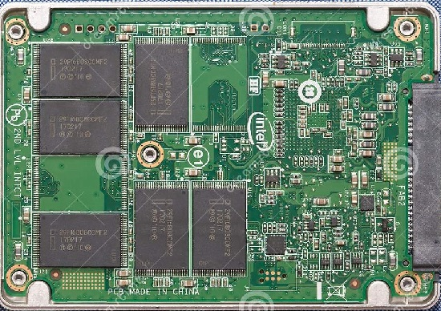
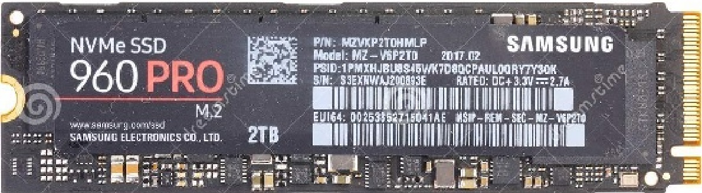
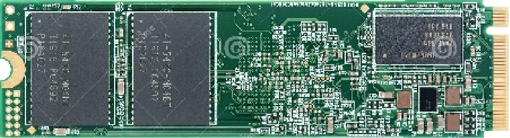
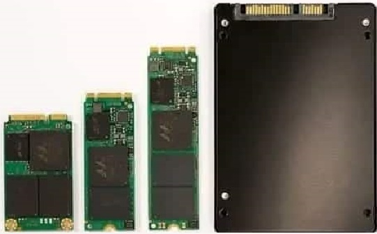

Solid State Drive
What is an SSD
A solid-state drive (SSD) is a solid-state storage device that uses integrated circuit assemblies to store data persistently, typically using flash memory, and functioning as secondary storage in the hierarchy of computer storage. It is also sometimes called a solid-state device or a solid-state disk, even though SSDs lack the physical spinning disks and movable read–write heads used in hard disk drives (HDDs) and floppy disks.

Differences from other storage medias
Compared with electromechanical drives, SSDs are typically more resistant to physical shock, run silently, and have quicker access time and lower latency.SSDs may have a lot faster access time, lower latency, faster write/read speeds but they can't store as much data as hard drives for the same price.SSDs also come in smaller form factors than hard drives.Lastly since SSDs don't have any mechanical parts they have a smaller chance of something breaking down.
| Characteristic | Average SSD | Average HDD |
|---|---|---|
| Size | 500GB | 1TB |
| Write speed | 520 mb/s | 150 mb/s |
| Read speed | 550 mb/s | 150 mb/s |
| Cost | 50-80€ | 40-45€ |

Hard disk on the left and SSD on the right
Components
Make the image when you click it highlight the components on text Flash Memory Components
Individual Flash die or devices using either NAND or NOR technology. Densities vary from 2GBytes to 64GBytes.
Buffer/Cache Components
This is high speed RAM memory components used for speed matching and to increased data throughput.
SSD Controller
The electronic component(s) that provide SSD device level interfacing and firmware execution. Included is an embedded processor, data ROM, data RAM, flash component interfacing, error correction code (ECC), wear leveling/TRIM, and security features.
Interface Components
The electrical interface between the host processor and the SSD peripheral device.
What is NAND flash memory
NAND is the most common type of flash memory. It is also used in USB flash drives, and SD cards. NAND memory is non-volatile, meaning it retains stored data even when the power is turned off. NAND flash memory contains an integrated circuit that uses NAND gates to store data in memory cells.Devices with NAND flash memory write and erase data faster and store significantly more data than NOR flash memory

NAND Flash chip
What is NOR flash memory
NOR flash is most often used in applications where individual bytes of data need to be written and read, and is most often used where random access and execute-in-place access techniques are required. As each read access takes the same amount of time, sequential read access is no faster than random access. Erase/program cycles can often be long.
Today’s NOR flash devices are available with capacities in the megabits and low gigabits range. Depending on the device, individual bytes or sectors must be erased before writing data, with erase/program speeds typically below 1 MB/s.

NOR Flash chip made by intel
M.2 SSD
What is an M.2 SSD
M.2, formerly known as the Next Generation Form Factor.It is a specification for internally mounted computer expansion cards and associated connectors. M.2 replaces the mSATA standard, which uses the PCI Express Mini Card physical card layout and connectors. Employing a more flexible physical specification, the M.2 allows different module widths and lengths, and, paired with the availability of more advanced interfacing features, makes the M.2 more suitable than mSATA in general for solid-state storage applications, and particularly in smaller devices such as ultrabooks and tablets.M.2 drives do not need a cord to connect to a motherboard. Instead, they are plugged directly into the motherboard with a dedicated M.2 connector slot.
The M.2 specification supports NVM Express (NVMe) as the logical device interface for M.2 PCI Express SSDs, in addition to supporting legacy Advanced Host Controller Interface (AHCI) at the logical interface level. While the support for AHCI ensures software-level backward compatibility with legacy SATA devices and legacy operating systems, NVM Express is designed to fully utilize the capability of high-speed PCI Express storage devices to perform many I/O operations in parallel.
Form factor
M.2 SSDs are rectangular in shape. Generally, they are 22 millimeters wide and usually 60 mm or 80 mm long, although card lengths can be different. The card size is identified by a four- or five-digit number. The first two digits are the width, and the remaining numbers are the length. For example, a 2260 card is 22 mm wide and 60 mm long. Longer length M.2 drives usually hold more NAND chips for extra capacity than the shorter versions
-
NVME M.2 SSD Made by samsung
 -
View of M.2 SSD
 -
M.2 Sizes and comparison to a normal SSD

How its made
Solid state drives use flash memory chips to store information, an SSD is made of several memory chips installed on a circuit board. Micron manufactures the flash memory chips in‑house on silicon wafers.
Because the silicon wafers are susceptible to contamination, robots move the wafers through more than 800 operations, which take more than a month to complete. As the wafers move through the process, many layers of materials are added to the wafer. These include conductive materials such as copper and non-conductive materials like silicone dioxide. After each layer of material is applied, the wafer is coated with light-sensitive fluid, then ultraviolet light is flashed on to it through a glass stencil of the electrical circuitry pattern. Where the light contacts the materials, they break down and dissolve. Where the materials are shielded by the stencil, they remain intact, which prints the circuitry pattern on the wafer. Chemical baths then wash away any residual material.
After printing, each 30-centimeter wafer yields hundreds of chips, which must be sliced apart. After the chips are cut apart, they are inserted into a protective plastic housing.
Large circuit boards are covered with tin alloy solder paste in the areas the memory chips and other components will be attached. A robot attaches the components to the board, then the assembled boards go into an oven that fuses the components to the board.